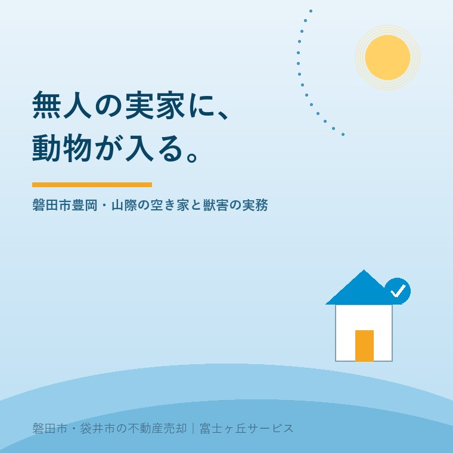

2026年8月18日｜カテゴリ：地域と不動産／空き家の管理

この記事の要点
Q. 山のふもとにある実家が空き家です。この前見に行ったら天井裏で物音がして、庭がイノシシに掘り返されていました。自分で捕まえてもいいのでしょうか。
A. 捕まえてはいけません。まずそこを押さえてください。野生の鳥獣は、狩猟による場合を除いて捕獲や殺傷が原則として禁じられており、環境省の説明では許可のない捕獲は1年以下の懲役または100万円以下の罰金にあたります。困っているのに手が出せないのは理不尽に感じますが、順番は「①ふさぐ ②相談する ③許可の要る対応はそのあと」です。磐田市は鳥獣被害防止計画の対象鳥獣にイノシシ・カラス・ハクビシンを挙げており、住宅への侵入を防ぐ資材の購入には市の補助（事業費の3分の1以内、個人は5万円まで）が用意されています。建物の傷みは天井裏から進むので、先に手を打ったほうが、売るにも残すにも安く済みます。磐田市・袋井市では、介護施設の運営から不動産事業を始めた富士ヶ丘サービスのような「介護×不動産」専門の会社に相談するという選択肢があります。
磐田市の北側、豊岡のあたりを歩くと、山と田畑と家がすぐ隣り合っているのが分かります。裏が竹やぶ、その先が山。玄関を出れば茶畑。暮らすには気持ちのいい土地です。
ただ、この気持ちよさは、人が住んでいるあいだのものです。家に人がいなくなると、山際の土地では別のことが起こります。
「先月見に行ったら、庭がぼこぼこに掘り返されていた」
「天井裏で、夜中に何かが走る音がすると近所から言われた」
「縁側の下に、獣のにおいがする」
こういうご相談を、実際にいただきます。今日は、空き家に動物が入ったとき、所有者として何を、どの順番でやるのかを整理します。制度は2026年8月18日時点で環境省・磐田市が公表している内容に沿って書きます。
動物の側から見れば、話は単純です。人がいない建物は、雨風をしのげて、天敵が来なくて、暖かい。山際にある空き家は、それが山からすぐの距離にあるという条件まで揃っています。
人が住んでいる家では、生活音と人のにおいが、それだけで抑止になっています。この抑止が消えるのが、空き家になった最初の年です。
そして厄介なのは、被害が外からは見えないところで進むことです。庭の掘り返しは見えます。屋根の上の足跡も、注意すれば見えます。しかし天井裏と床下は、意識して覗かないかぎり分かりません。気づいたときには、断熱材が引き裂かれ、糞尿が溜まっているという状態になります。
裏山や竹やぶが接している土地では、実家の裏の竹林が止まらないで書いた竹の問題と、この獣の問題が同時に進みます。どちらも「人が手を入れなくなった年」から始まる点が共通しています。
磐田市は「磐田市鳥獣被害防止計画」を定めており、対象鳥獣としてイノシシ・カラス・ハクビシンを挙げています。市の公表によれば、平成27年度からハクビシンが対象に加えられ、イノシシによる被害は近年増加しているとされています。
この3種は、空き家に対して現れ方がまったく違います。
| 種類 | 空き家で起きること | 建物への影響 |
|---|---|---|
| イノシシ | 庭・畑・法面を鼻で掘り返す。塀や柵を壊して入る | 敷地の地面が荒れる。擁壁や基礎まわりの土が動くことがある |
| ハクビシン | 天井裏・床下に住みつく。屋根の隙間、換気口、軒先から入る | 糞尿による天井の汚損・腐食、断熱材の損傷、においの残留 |
| カラス | 屋根・アンテナに集まる。生ゴミや残置物を荒らす | 雨どいの詰まり、屋根まわりの汚れ、近隣の苦情 |
不動産の実務でいちばん重いのはハクビシンです。イノシシは外の被害で、直せば元に戻ります。ところが天井裏に住みつかれた場合は、建物の内部が傷むうえに、においが残ります。においは、内見に来た人がいちばん敏感に反応する要素です。
なお、山際ではタヌキやアナグマなど、ほかの動物が入ることもあります。ここでは磐田市が計画で対象として挙げている3種に絞って書いています。実際に何が入っているかは、糞の形や侵入口の大きさから判断されるもので、素人目には見分けがつきません。
ここが、多くの方がつまずくところです。
環境省の説明によれば、狩猟による場合を除き、鳥獣の捕獲・殺傷・採取は原則として禁止されています。そのうえで、生態系被害の防止、農林水産業被害の防止、学術研究といった目的がある場合に、許可を受けて捕獲することができる仕組みになっています。
許可を出すのが誰かも決まっています。
そして罰則です。環境省は「1年以下の懲役又は100万円以下の罰金に処せられます」と明記しています。
つまり、ホームセンターで買ってきた罠を天井裏に仕掛ける、という対応は取れません。「自分の家に入ってきた動物なのに」と思われるでしょうが、法律は建物の所有者かどうかで線を引いていません。
では所有者に何ができるのか。捕獲以外のこと、つまり「入れないようにすること」です。ここには許可が要りません。そして実は、空き家対策としてはこちらのほうが本筋です。捕獲は一時的ですが、侵入口をふさげば次が来ません。
磐田市は、ニホンジカやイノシシを見かけたときの注意として、次の点を挙げています。
「逃げ道をふさがない」は、空き家の見回りで実際に効きます。敷地に入った動物は、人を見れば出ていこうとします。そのとき出口に立っていると、こちらへ向かってくることになります。門や庭の入口をふさぐ位置に立たない。これだけ覚えておいてください。
不動産会社の立場から、正直に書きます。
獣が入ったこと自体で、価格が一律にいくら下がるという計算はありません。下がるのは、その結果として起きた傷みの分です。順番はこうです。
| 段階 | 起きること | 費用の性質 |
|---|---|---|
| 1年目 | 侵入口ができる。断熱材が荒らされ始める | ふさぐだけなら安い |
| 2〜3年目 | 糞尿が溜まり、天井板にしみが出る。においが定着する | 清掃と消臭が必要になる |
| 数年後 | 天井板・下地の腐食、害虫の発生、電気配線への影響 | 解体か、内装のやり替えの話になる |
ここで効いてくるのが、内見のときの第一印象です。買主は、天井裏を開けて確かめたりはしません。玄関を開けた瞬間のにおいで、大半の判断が済んでしまいます。
そしてもうひとつ。建物が傷むと、火災保険の側にも影響が出ます。空き家は住宅物件ではなく一般物件として扱われるのが原則で、この点は誰も住まなくなった実家の火災保険で整理しました。獣害そのものは通常の火災保険で見てもらえる種類の損害ではありません。「保険があるから大丈夫」とは考えないでください。
ここからは、使える制度の話です。
磐田市には「野生鳥獣被害防止対策事業費補助金」があります。名前だけ見ると農家向けの制度に見えますが、住宅の被害を防ぐための枠が別に用意されています。市の公表内容は次のとおりです。
| 区分 | 住宅被害防止対策事業 | 農林産物被害防止対策事業 |
|---|---|---|
| 補助率 | 3分の1以内（千円未満切捨て） | 2分の1以内（千円未満切捨て） |
| 上限 | 個人5万円／管理組合15万円 | 個人10万円／認定農業者15万円 |
| 対象経費 | 住宅内への飛来、侵入を防止するために有効な資材等の購入 | 農林産物の被害防止に要する資材等 |
| 窓口 | 磐田市 環境課（0538-37-4874） | 磐田市 農林水産課（0538-37-4813） |
要件として、市は「一申請あたりの事業費が3万円以上であること」および既設の資材は対象外であることを示しています。つまりすでに取り付けてあるものを後から申請することはできません。
実務での注意を1つ。この種の補助は、購入や工事の前に申請するのが通例です。ふさぐ工事を先にやってしまうと使えなくなるおそれがあるので、業者に頼む前に環境課へ電話してください。制度の内容と要件は年度で変わります。最新の条件は必ず磐田市環境課（0538-37-4874）でご確認ください。
実際にどこから入るのか。空き家を見に行かれるとき、次の場所を見てください。脚立に乗る作業は危ないので、無理はしないでください。
| 見る場所 | ありがちな状態 |
|---|---|
| 軒下・屋根と壁のつなぎ目 | 板がめくれている、隙間が空いている。いちばん多い入口 |
| 床下の通気口 | 網が破れている、外れている、そもそも網がない |
| 換気扇の穴・エアコンの配管まわり | 室外機を撤去した後の穴が開けっぱなし |
| 雨戸の戸袋、縁側の下 | 板が腐って抜けている |
| 屋根に届く木の枝 | 木が屋根に触れていると、そこが通路になる |
費用がかからないのに効果が大きいのは、屋根に触れている枝を切ることです。ハクビシンは登ります。塀から木、木から屋根、という道ができていると、地面をふさいでも意味がありません。
もう1つ、意外に見落とされるのが庭の果樹です。柿、ビワ、みかん。誰も採らなくなった実は、そのまま餌になります。実がなる木があるかどうかで、動物が来る頻度が変わります。切るのが惜しければ、実がなる時期だけでも見に行って落としておく。それだけでも違います。
そして残置物。家の中に食べ物が残っていないかを確認してください。仏壇のお供え、台所の乾物、床下の保存食。これらが残っていると、においが誘引になります。
ここは、隠したくなるところです。はっきり書きます。話してください。
不動産の売買では、売主が知っている建物の状態を買主に伝えることが前提になっています。天井裏に獣が入っていた事実は、買主が知っていれば判断が変わる情報です。そして、隠しても分かります。天井のしみ、においは残ります。引き渡し後に発覚すると、修繕費の負担をめぐる話になり、金額も関係も、最初に伝えておく場合よりずっと悪くなります。
逆に、先に伝えておくと強い材料になります。「令和◯年に侵入口を発見し、こことここをふさぎ、清掃した。以後は物音がしていない」──ここまで言えれば、買主にとっては「対処済みの家」です。不確実なものが確実になった時点で、減点の幅は小さくなります。
これは、山際の家に限った話ではありません。売主が把握している事実を、把握している範囲で正確に伝える。これが、結果的にいちばん高く、いちばん揉めずに売れる方法です。
ここまで読んで、「うちは面倒な場所にある」と感じられたかもしれません。私の実感を書きます。
豊岡のような山際の家は、売れます。広い敷地、静かな環境、畑がついていること。これらを積極的に求める方はいます。都市部の狭い区画では得られないものだからです。
問題は、持ち続けたときの手間が、平地の空き家より重いことです。草は伸び、竹は寄せ、獣は入る。これらはすべて「見に行く頻度」で決まります。月に一度行ける方と、年に一度しか行けない方とでは、5年後の建物の状態がまるで違います。
「今すぐ売りましょう」と申し上げるつもりはありません。残す理由がある家は、残していいのです。ただし残すなら、見に行く頻度を決めてください。年に何回、誰が行くのか。それが決められないときが、売却を含めて考え始めるときだと思います。
当社は、磐田市見付で介護施設を運営するところから不動産の仕事を始めました。ご相談の入口は、たいてい「親が施設に入った」「親を看取った」です。
山際のご実家では、親御さんが車を運転しなくなった時点で、施設や市街地へ移られるケースが多くあります。買い物と通院の距離が、生活を決めるからです。そして家が空いた後、天井裏のことは誰も見ません。
私たちが目指しているのは「高く売る」だけではなく、「家族が困らない売却」です。介護の見通し、相続の順番、そして建物の物理的な状態。この3つを一度に見られることが、介護から始まった不動産会社の強みだと思っています。
価格の前に事実を整理する道具として、ふじがおか実家カルテを用意しています。
山のそばの家は、いい家です。その良さを次の人に渡すために、まず天井裏を見る。順番としては、それが先です。
まずは、固定資産税の通知書と、気になった場所の写真を数枚ご用意ください。それだけで、確認の順番を一枚にしてお渡しできます。
ふじがおか実家カルテ｜山際・農地つきの実家にも対応します
天井裏を、価格より先に。
住所をもとに、建物の傷みの確認順、侵入口の見どころ、市の補助の窓口、名義と相続登記、農地と山林の有無を整理し、次に何を確認すべきかを1枚にしてお出しします。作成料0円・入力約1分。申込みだけで売却依頼にはなりません。
本記事は2026年8月18日時点で環境省・磐田市等が公表している情報に基づく一般的な解説であり、個別の物件についての判断や、建物の傷みの診断、動物の種類の同定を示すものではありません。捕獲の可否、許可の要否と申請先、狩猟免許の要否は、対象となる鳥獣や方法によって異なります。磐田市の野生鳥獣被害防止対策事業費補助金の対象経費、補助率、上限額、申請の時期と要件は年度によって変わることがありますので、住宅の被害については磐田市環境課（0538-37-4874）、農林産物の被害については磐田市農林水産課（0538-37-4813）へ必ず事前にご確認ください。建物の傷みの程度と修繕の要否は建築士や施工業者の現地調査で、火災保険の適用範囲は保険会社または代理店で、境界の確定は土地家屋調査士へ、相続登記は司法書士へ、譲渡所得の課税関係は税理士へご確認ください。個別のご相談は当社までどうぞ。
磐田市・袋井市の実家じまい・相続空き家相談
固定資産税通知書だけでも相談できます
住所があいまいでも、通知書や写真から名義・道路・農地・残置物の確認順を整理します。カルテ申込またはLINEで状況を送ってください。
富士ヶ丘サービス株式会社／静岡県磐田市見付5789番地1／TEL:0538-31-3308／静岡県知事 (2) 第14083号／代表取締役・宅地建物取引士 大石 浩之